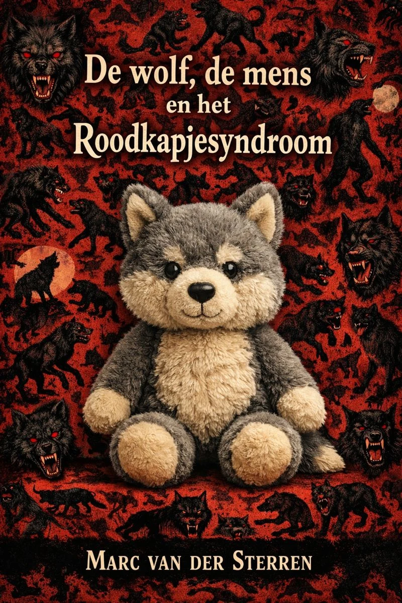
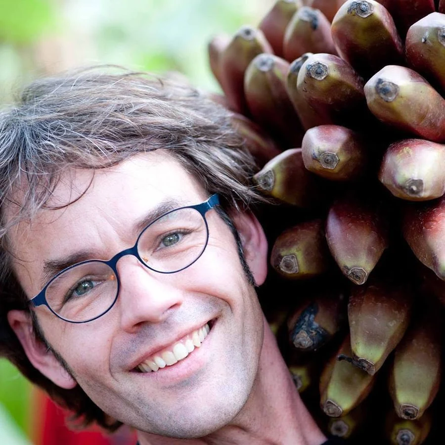

Over het boek
De wolf is alweer tien jaar terug in Nederland. Sommigen zijn daar blij mee, anderen jaagt het juist angst aan. Ons land is inmiddels zo gepolariseerd dat er sprake is van voorstanders en tegenstanders die lijnrecht tegenover elkaar staan.
Om de gevoelens ten opzichte van dat dier goed te begrijpen en om een heldere positie in te nemen moeten we allereerst kijken naar de mens. Waar komen onze sentimenten jegens de wolf vandaan? En hoe moeten we die duiden?
Hiervoor duik ik de archieven in. Ik doe onderzoek naar mythes, sagen en volksverhalen over de wolf in Nederland en Vlaanderen. Ik heb inmiddels ongeveer alle heemkundeverenigingen in dit gebied aangeschreven en mijn mailbox stroomt vol met verhalen. Verhalen over weerwolven, waar je jezelf tegen kon beschermen met een knuppel van eikenhout waar zeven jaar een nachtegaal op heeft zitten fluiten, zo leert ons een verhaal van Wiel Aerts uit Blerick.
‘De wolf, de mens en het Roodkapjesyndroom’, luidt de werktitel van het boek. Het wordt een omvangrijke uitgave over de relatie die mens en wolf sinds het paleolithicum hebben opgebouwd en hoe deze relatie is veranderd door de modernisering van de samenleving en de mythologisering van een dier dat zo lang is verdwenen en nu als een feniks herrezen lijkt.

Over de schrijver

Marc van der Sterren
Journalist & auteur
Als journalist heeft Marc van der Sterren zich ontwikkeld van landbouwjournalist naar onderzoeksjournalistiek en klimaatjournalist. Hij schreef voor regionale, landelijke en internationale media, over de regio Noord-Limburg, over landelijke ontwikkelingen en over Afrika.
Zijn interesse is breed, zowel wat betreft onderwerpen, de regio als de tijd. Want ook over historische onderwerpen heeft hij al eerder geschreven.